Built for the sink
One less wet thumb in the world.
Android 11 and later. No account. No root.
A small Android helper that swipes to the next YouTube Short when this one ends or loops. Two floating buttons, no settings maze.
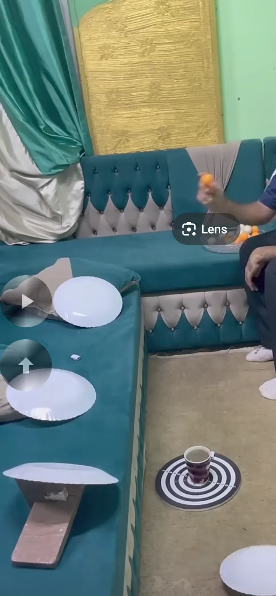

The app reads the progress line, not the video. When a Short finishes or loops, it swipes once.
Lives and still posts get skipped, so clips keep playing while your hand stays out of it.
the thin line at the bottom of the screen. that is the whole trick.
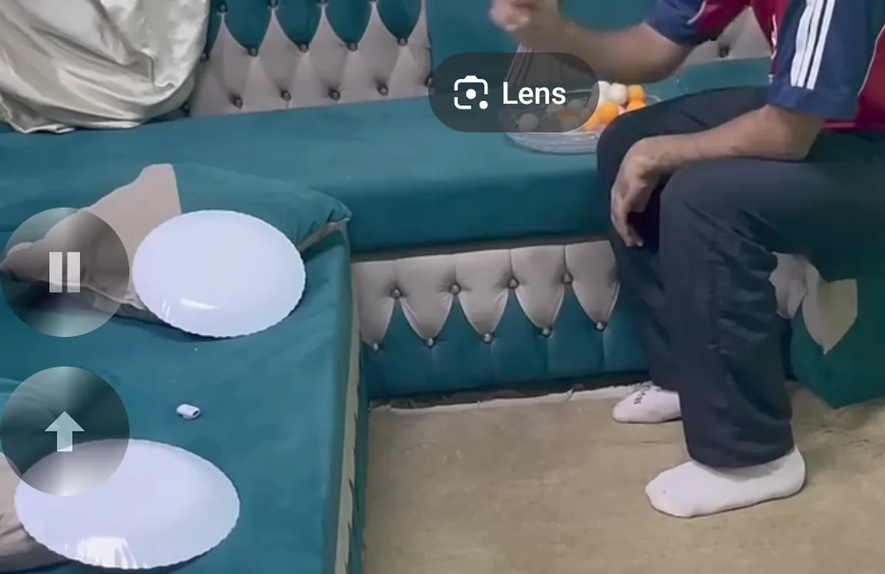
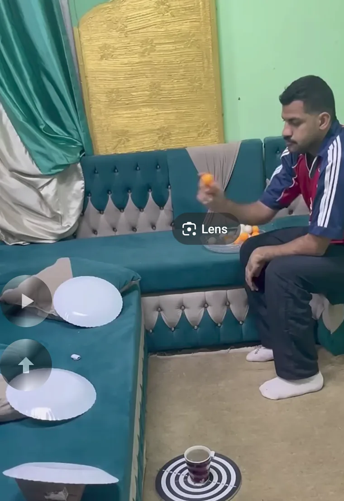
Tap the pause button and YouTube behaves like YouTube again. Tap it again and the swiping resumes.
The buttons hide when a Short is not fullscreen, so they stay out of the feed.
A pause circle and an up arrow, both half see-through, on top of the Short. No panel, no settings sheet, no second app.
It does not know which Short you are watching. It knows where the line is.
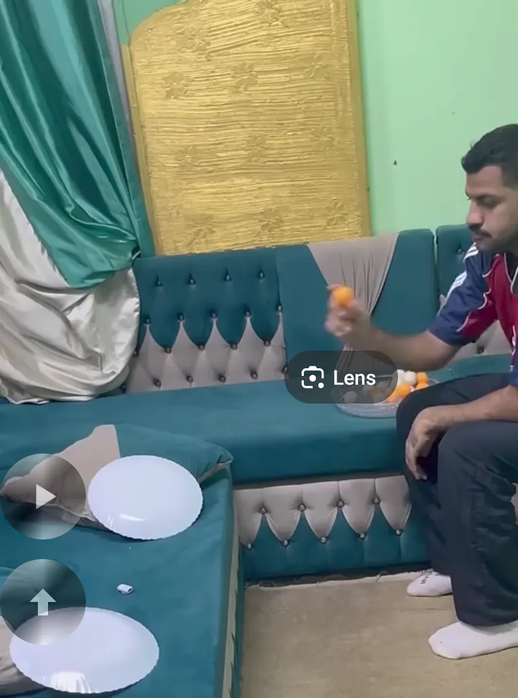
sitting on top of a Short
Accessibility is how an app sees another app's screen. You turn it on once, in Android settings.
No account, no analytics, and no server that knows what you watched.
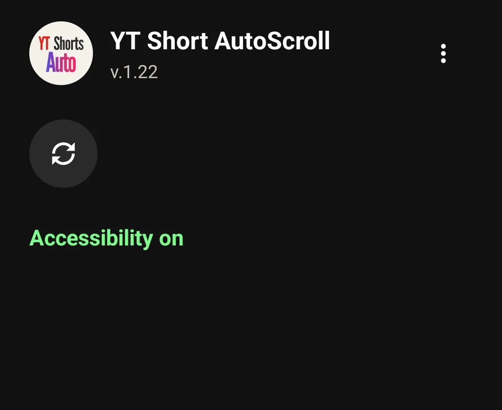
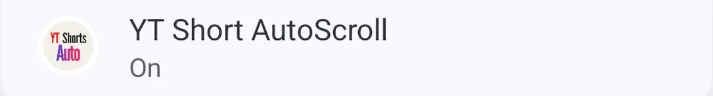
The same Short, the same buttons, one tap apart.
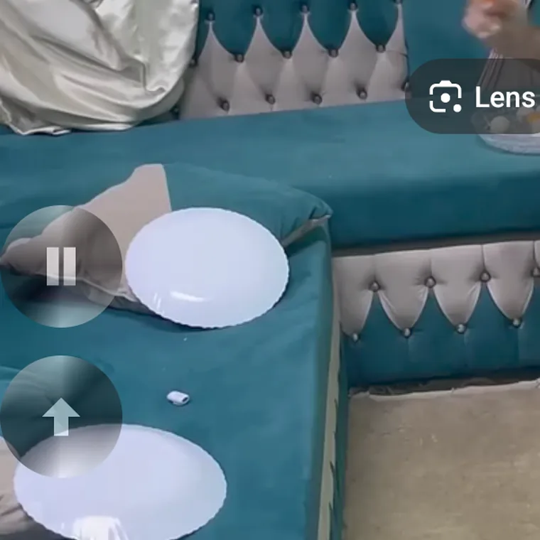
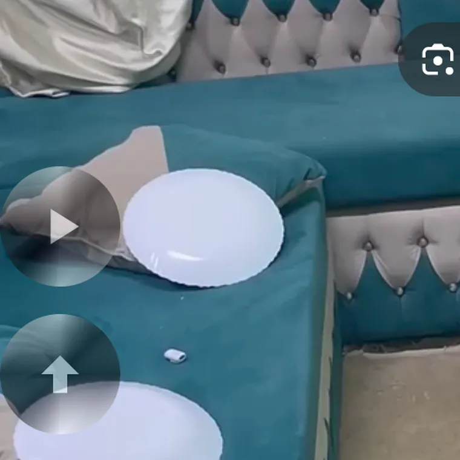
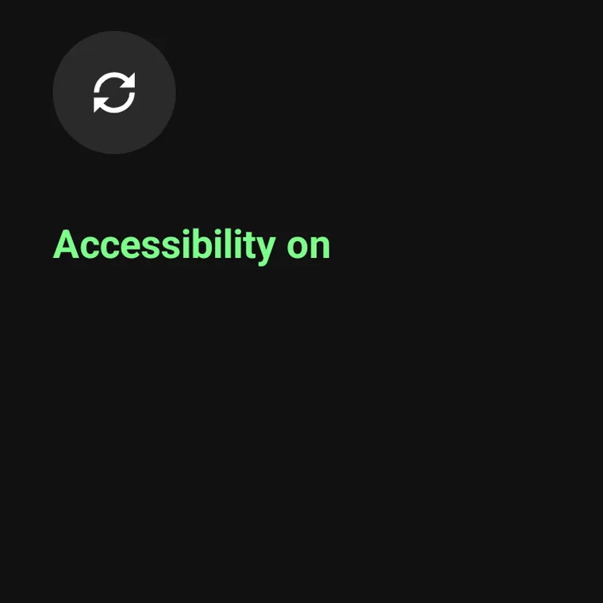
Captured on a phone, from the app, with the buttons where they sit.
Install the APK, turn on one accessibility service, open a Short. That is the whole setup.
Allow the install when Android asks about this source.
Settings, Accessibility, YT Short AutoScroll, On.
The buttons appear when the clip fills the screen.
the permission sounds worse than it is. the link above says exactly what it reads.
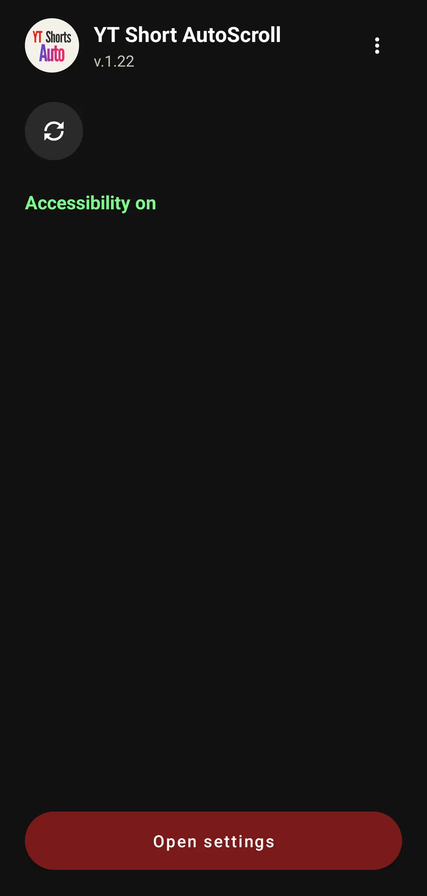
Everything you need. Nothing that asks for your email.
One less wet thumb in the world.
Lives and still posts are skipped on purpose.
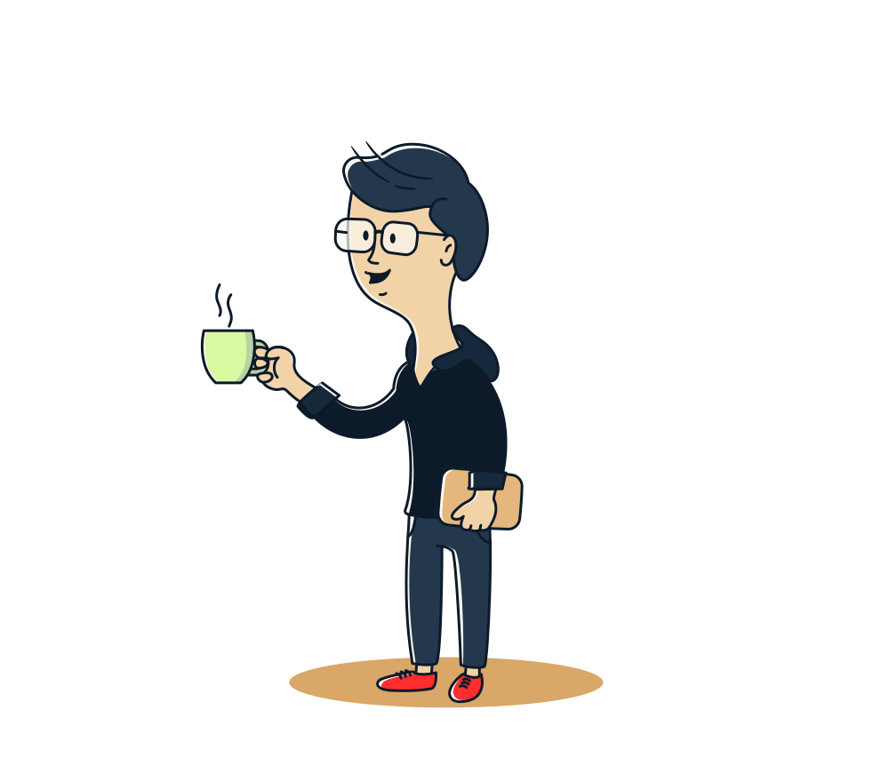
Pause and up. No menu behind them.
Not fullscreen, not on screen.
An accessibility service does the work.
No ads, no account, no upsell. Nothing to renew.
Android 11 and later. One direct APK. No store, no account, no newsletter popup.
Android may scan the APK because it has not seen the app before. If Play Protect blocks the install, allow it for YT Short AutoScroll in the Play Store settings and tap Update again inside the app.
Install pass
YT Short AutoScroll
Android v.1.22
YT-Short-AutoScroll.apk